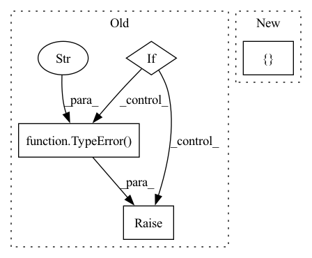

Pattern ID :13025
Before Change
task = self.task(**task_kwargs)
task.kwargs = task_kwargs
elif raise TypeError(f"{self.task} needs to be a Class object (type="type") or a Callable, e.g. a function."
f"But it is of type "{type(self.task)}"." )
task.name = self.name
// override publishes from task spec
task = self._override_publishes(task)After Change
task = MyTask(task=self.task, kwargs=task_kwargs)
task_all_arguments = list(inspect.signature(self.task).parameters)
task_extra_arguments = list(task_kwargs) + [ "task"In pattern: SUPERPATTERN
Frequency: 4
Non-data size: 4
Instances Fragment ID: 44026302
Project Name: fluidml/fluidml
Commit Name: 3e9a05ca9bb3aa67df99de3ecf199b0e639a19ca
Time: 2021-03-04
Author: larshillebrand@icloud.com
File Name: fluidml/flow/task_spec.py
M Class Name: BaseTaskSpec
N Class Name: BaseTaskSpec
M Method Name: _create_task_object(2)
N Method Name: _create_task_object(2)
M Parent Class: ABC,DependencyMixin
N Parent Class: ABC,DependencyMixin
M File Name: fluidml/flow/task_spec.py
N File Name: fluidml/flow/task_spec.py
M Start Line: 29
M End Line: 47
N Start Line: 32
N End Line: 53
Before Change
assert len(state_elements) == len(self.se_to_idx), f"state-elements are not unique:{state_elements}"
// observation matrix:
if (int(h_module is None) + int(h_tensor is None)) != 1:
raise TypeError("Exactly one of `h_module`, `h_tensor` must be passed." )
self.h_module = h_module
self.h_tensor: Tensor
self.register_buffer("h_tensor", h_tensor, persistent=False) // so that `.to()` works
self.h_kwarg = h_kwargAfter Change
// can/should be overridden by subclasses:
self.expected_kwargs: Optional[List[str]] = None
self.f_modules: nn.ModuleDict = nn.ModuleDict()
self.f_tensors: Dict[str, torch.Tensor] = {}
@jit.ignore
def offset_initial_state(self, initial_state: Tensor, start_offsets: Optional[Sequence] = None) -> Tensor:
return initial_state Fragment ID: 44026300
Project Name: strongio/torchcast
Commit Name: d98b47d1ac38c61653093efd887cc672f228917d
Time: 2021-09-01
Author: jacob.dink@strong.io
File Name: torchcast/process/base.py
M Class Name: Process
N Class Name: Process
M Method Name: __init__(5)
N Method Name: __init__(11)
M Parent Class: nn.Module
N Parent Class: nn.Module
M File Name: torchcast/process/base.py
N File Name: torchcast/process/base.py
M Start Line: 38
M End Line: 74
N Start Line: 22
N End Line: 48
Before Change
if fields_types.get(name, List[str]) == List[str]
and (not isinstance(value, list) or len(value) == 0 or not isinstance(value[0], str))
}
if len(list_typing_errors) > 0:
raise TypeError(f"Found fields that are not non-empty list of strings: {list_typing_errors}" )
other_typing_errors = {
name: value
for name, value in metadata_dict.items()After Change
def validate_metadata_type(metadata_dict: dict):
field_types = {field.name: field.type for field in fields(DatasetMetadata)}
typing_errors = {}
for field_name, field_value in metadata_dict.items():
field_type_error = validate_type(
metadata_dict[field_name], field_types.get(field_name, Union[List[str], Dict[str, List[str]]])
) Fragment ID: 44026309
Project Name: huggingface/datasets
Commit Name: 7aedad66073dc9a0501ea890327f1f5e159d4300
Time: 2021-06-14
Author: chhablani.gunjan@gmail.com
File Name: src/datasets/utils/metadata.py
M Class Name: AnonimousClass
N Class Name: AnonimousClass
M Method Name: validate_metadata_type(1)
N Method Name: validate_metadata_type(1)
M Parent Class:
N Parent Class:
M File Name: src/datasets/utils/metadata.py
N File Name: src/datasets/utils/metadata.py
M Start Line: 102
M End Line: 120
N Start Line: 174
N End Line: 184
Before Change
label_names (`List[str]`, `optional`):
The list of keys in your dictionary of inputs that correspond to the labels.
if not isinstance(onnx_config, OnnxConfig):
raise TypeError(
f"The ONNX configuration `onnx_config` associated to the pre-existing ONNX model is of type "
f"{type(onnx_config)}, which is not an instance of `OnnxConfig`."
)
self.onnx_named_inputs = list(onnx_config.inputs.keys())
self.onnx_named_outputs = list(onnx_config.outputs.keys())
self.onnx_config = onnx_configAfter Change
The list of keys in your dictionary of inputs that correspond to the labels.
self.compute_metrics = compute_metrics
self.label_names = [ "labels" Fragment ID: 44026304
Project Name: huggingface/optimum
Commit Name: fb7e303d9254fcee194aa76f4a0b7fa9d9b140d0
Time: 2022-08-24
Author: 80481427+echarlaix@users.noreply.github.com
File Name: optimum/onnxruntime/model.py
M Class Name: ORTModel
N Class Name: ORTModel
M Method Name: __init__(5)
N Method Name: __init__(6)
M Parent Class:
N Parent Class:
M File Name: optimum/onnxruntime/model.py
N File Name: optimum/onnxruntime/model.py
M Start Line: 39
M End Line: 74
N Start Line: 55
N End Line: 58